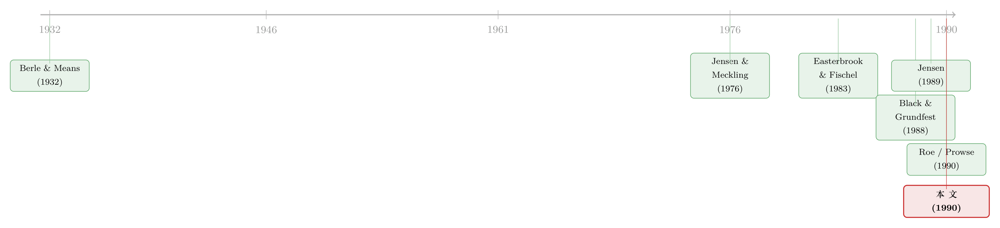

美国不信任她的资本家：一篇把『政治』写进公司治理的檄文
本文读的是 Grundfest (1990, Journal of Financial Economics)：作者——一位刚卸任的 SEC 委员——提出一个尖锐而朴素的命题：在美国，投资者监督管理层、化解代理问题的诉求，被政治系统系统性地让位于管理层「免受资本市场约束」的诉求。换句话说，经济学家眼里需要用「最优合约」去解的代理问题，在政治家眼里只是一份可以分配给宠儿的「entitlement（特许权）」——而最大的宠儿，正是公司管理层本身。
1 一个让金融学家不太舒服的开场
先抛一个问题：为什么一家公司的股东，明明在法律上是这家公司的「主人」，却越来越管不住自己雇来的经理人？
按照标准的现代金融理论，这本不该是个问题。詹森与麦克林 (Jensen and Meckling, 1976) 早就告诉我们，代理问题 (agency problem) 是可以被「设计」掉的：用最优合约、用激励机制、用资本市场的接管威胁，让经理人的利益和股东对齐。市场为权力的争夺提供了一个看不见的纪律——你干得不好，就有人来收购你、换掉你。（关于代理成本这条主线，可参见《债务这副药，为什么不能全吃？——重读 Jensen 和 Meckling 五十年》。）
但本文作者偏偏从一个金融学家不太愿意正视的角度发问：如果这套「市场纪律」本身，正在被法律一条一条地拆掉呢？
他给出的事实清单令人心惊：半个多世纪以来，美国的州政府与联邦政府不断立法，限制投资者对上市公司治理的影响力。一边，是约束投资者自由的法规汗牛充栋；另一边，是「商业判断规则 (business judgment rule)」给了管理层极大的自由裁量空间——无论是应对收购要约，还是日常经营。股东想通过「公司控制权市场 (market for corporate control)」来施压，却被层出不穷的立法和判例死死按住。
这就是作者所说的 subordination（从属、屈居其下）：投资者的监督权，被「降级」到了管理层利益之下。
2 两份清单：当「保护别人」成了一句台词
本文真正的张力，藏在两份立法清单的对照里。
首先，是「其他利益相关者条款 (other constituency statutes)」。至少 23 个州通过了这类法律，允许（但不要求）管理层在面对敌意收购时，考虑员工、退休者、供应商、本地社区等非股东群体的利益。听上去很温情，对吧？
可作者立刻指出一个吊诡之处：这些被「保护」的群体，在法律上根本没有资格去挑战那些声称代表他们做出的公司决策。法律没有像「关厂法」或「遣散费条款」那样去直接保护工人，而是搞了一套「涓滴式 (trickle-down)」的治理理论——把好处交给管理层去「自由裁量」，指望他们替受益人着想。
接着，一个自然的问题是：那为什么不直接立法保护工人？作者举了一个极具说服力的反证——管理层游说的立场，把它自己的算盘暴露得一清二楚：他们支持那些与反收购捆绑在一起的「保就业」措施，却反对那些不顺带保护管理层的纯劳工措施 (Grundfest, 1988, 1990a)。
然后，是规模更大的那份清单：至少 42 个州通过了反收购法 (antitakeover statutes)；有人统计州一级的反收购立法多达 150 部 (McGurn, Pamepinto, and Spector, 1989)，以至于「事实上已经存在一部全国性的反收购法」。这些法律增加了管理层挫败收购的裁量权，却没有相应增加他们对任何可识别群体的责任。
两份清单拼在一起，结论就浮出水面了：所谓「保护其他利益相关者」，很大程度上是管理层为自己争取「免受资本市场约束」时，一块方便好用的修辞遮羞布 (rhetorical mask)。
3 真正关键的一步：把管理层当成一个「独立的利益集团」
到这里，本文完成了它最重要的一次概念转身。
传统叙事里，管理层是「其他利益相关者」的守护者——它抵抗收购，是为了保护那些害怕被收购伤害的群体。但真正关键的一步在于：作者提出，应当把管理层本身看作一个自成一体、强有力的利益集团 (a constituency in its own right)。
为什么管理层是个强大的利益集团？因为它手里握着实打实的政治筹码：它指挥政治献金，它做出选址、建厂等能奖励或惩罚特定议员的决策。于是，「保护管理层是为了服务一个更大的善」这个说法，与其说是对立法的准确解释，不如说是一套政治上方便的说辞。
而作者并不打算让这个论断停留在理论上。他用了一连串「管理层并非总是好人」的证据来反衬这种政治偏爱的荒诞：从污染环境（埃克森·瓦尔迪兹号漏油）、到给婴儿食品掺假（Beech-Nut 把糖水当苹果汁卖）、再到对五角大楼虚报账单（GE、Northrup 的欺诈性国防合同）。这些社会不负责任的指控，针对的是经理人，而不是提供资本的股东或债权人。
经济上的浪费更触目惊心。最生动的案例是 RJR-Nabisco 的杠杆收购：私人空军、几十张乡村俱乐部会员卡、可疑的名人合同……但更根本的，是诸如「压货 (trade-loading)」这种为了做高账面市场份额、提前确认利润，最终却拖垮长期盈利的操作 (Loomis, 1989)。最有力的一击来自 RJR 自己的高管在收购前的供认：只要管理得当，营业收入「一年之内就能提高 40%」，利润率能从 11% 提到 15%，现金流能从 8.16 亿美元提到 11 亿美元 (Burrough and Hellyar, 1990, pp. 370–371)。
于是反转出现：RJR 是个特例吗？作者引用了一个让人坐不住的宏观估算——若把收购溢价粗略地当作管理层本可实现的生产率改进的尺子，那么 1975 到 1986 这十年，管理不善累积的损失超过了 4000 亿美元 (基于 Jensen, 1989a)；即便用更保守的算法，Black and Grundfest (1988) 也估计 1981–1986 年间股东财富的增加（以 1987 年美元计）至少 1620 亿美元。这正是「自由现金流」假说的政治回声——现金该不该「还」给股东，从来不只是财务问题。（关于这条主线，可参见《现金为什么一定要「还」出去？——四十年后，重读 Jensen 的自由现金流》。）
4 政治与经济的「联合均衡」：一份研究议程
如果说前半篇是「诊断」，那本文的后半篇就是一份写给金融学界的研究议程 (an academic agenda)。作者认为，金融学若只盯着经济，就会看不懂自己研究的市场。他提出三个层次的挑战：
第一层，是记录与分析那些限制投资者监督的监管措施的累积效应——没有这层认识，很多观察到的市场行为根本无法解释。
第二层，也是本文最具方法论野心的主张：资本市场的行为，是由一个政治与经济共同决定的均衡 (jointly determined political and economic equilibrium) 所引导的。市场对监管的入侵会用新的交易和组织形式来回应，监管者再用新的限制来回应——这是一场持续的、来回拉锯的博弈。要理解资本市场机制在长期治理中能扮演什么角色，就必须理解「政治市场」。
第三层，是描述这些限制监督的法规带来的经济与社会后果。作者借用公共选择理论 (public choice theory) 的洞见提醒我们：美国的政治过程并不想要一个传统经济学意义上「有效率」的经济；它会刻意制造租金和无效率，去服务政治目标——「立法常常偏袒少数人的利益……被剥夺者可能恰恰是被一个组织良好的少数派在立法上『抢劫』了的多数派」(Hovenkamp, 1990, p. 871)。
这就是作者所谓的 politically explicit analysis（政治显式的分析）：把政治制度当作「胁迫与再分配的武器」(Moe, 1990)，而不仅仅是缓解集体行动问题的中性机构。
5 同一道题，两套答卷：美国 vs 日本
抽象的「政治约束有多大代价」，在美国市场内部其实很难严格度量——因为要找到监管制度的变异，你得回看到 1930 年代的大萧条，而那时与今天相隔太远，推断极其危险。于是本文借同一卷里的几篇论文，转向了跨国比较这条路。
一边是 Roe (1990) 描绘的美国图景：银行、保险公司、养老金、共同基金这些最大的机构资本池，被法律阻止在单一公司里同时持有大额的债权和股权头寸，被迫采取「被动」策略。结果是管理层获得更大的回旋余地，而美国公司要为这套损害监督、滋生代理成本的监管结构，付出更高的资本成本。（这正是《全美最大的钱袋子，凭什么不能当老板？》讲的故事。）
另一边是 Prowse (1990) 笔下的日本：金融机构可以在同一家公司里同时持债又持股。债权人与股东利益的「合流」，使日本企业不必为了补偿债券持有人—股东冲突的风险而多付代价。于是，同等杠杆下，日本公司能投入更多研发、保持更灵活的资产结构，以更低的融资成本运营、扛起更高的债务—股权比。（这套「既当债主又当股东」的机制，详见《同一道难题，两套金融系统：日本的银行为什么既当债主又当股东》。）
而 Gilson (1989, 1990) 与 Hoshi, Kashyap, and Scharfstein (1990) 则补上了另一块拼图：在美国，违约或重组之后，债权人可以重新拿回监督权——Gilson 记录到违约公司的高管与董事会成员出现显著更高的更替率。但作者一针见血地指出其中的反讽：正因为违约后的监督如此可怕，管理层会不惜代价地避免违约——选更保守的资本结构、避开有风险的项目、靠并购搞多元化、买保险对冲。一家只要「绕开违约」的公司，就对这套事后纪律免疫了。而这种「避免违约」的私人动机，本身又制造出了一个新的代理问题 (Jensen, 1989a, b)。（关于违约如何触发治理权的转移，参见《违约那天，谁悄悄接管了这家公司？》；日本主银行如何降低困境成本，参见《困境企业的『靠山』：为什么有主银行的日本公司摔得更轻》。）
日本的经验像一面镜子：它照出的不是「日本更优越」，而是——美国资本市场的结构，是政治选择的产物，而非自然的、效率最优的结果。
6 文献脉络
把这篇 1990 年的檄文放回它的坐标系里，脉络会清晰很多。
源头是 Berle and Means (1932) 那个古典命题：现代公司里所有权与控制权的分离。接着，Jensen and Meckling (1976) 把这种分离形式化为代理成本，奠定了「用合约和市场去解代理问题」的整个范式。然后，Easterbrook and Fischel (1983) 等人论证了投票（代理权之争）作为监督手段的内在低效，反衬出接管市场的核心地位。再然后，到了 1980 年代末，Black and Grundfest (1988)、Jensen (1989a, b) 用收购溢价和 LBO 的证据，把「管理不善的代价」量化到了几千亿美元的级别。

而本文所处的位置，是 1990 年这一卷「企业结构与治理」会议论文的引言兼总论。它不满足于在代理问题的框架内打转，而是把整个分析向上抬了一层：代理问题为什么没被解决？因为政治系统不想解决它。Roe (1990)、Prowse (1990)、Hoshi-Kashyap-Scharfstein (1990)、Gilson (1990) 提供了证据，而本文提供了把它们串起来的政治经济学叙事。这条线后来流向了 La Porta 等人的「法与金融」、以及金融发展的政治学研究（这条更宏大的脉络，可参见《金融发展会「倒退」吗？——一段被遗忘的二十世纪金融史》与《把法律写成一个「被抓的概率」：投资者保护如何长出一国的股市》）。
7 评论与延伸（Q&A + 研究方向）
(a) 几个可能的疑问
Q：这是一篇「论文」吗？它有数据、有识别策略吗？
坦白说，按今天的实证标准，它更像一篇有学术野心的评论性文章 (essay)——本文是该会议卷的引言兼总论，没有自己的数据集、没有回归、没有因果识别。它的「证据」是一份份立法清单（23 个州的其他利益相关者条款、42 个州的反收购法）、新闻案例（RJR）和对同卷其他论文的综述。它的贡献是框架与议程，不是某个被干净识别出来的系数。读它要带着这个预期。
Q：「管理层是独立利益集团」这个论断，和标准代理理论冲突吗？
不冲突，而是抬高了一层。标准代理理论说经理人会追求私利（在职消费、帝国建造、规避风险）；本文接受这一点，但追问：当股东想用市场纪律去约束这种私利时，为什么约束工具本身被法律削弱了？答案是经理人不仅在公司内部追逐私利，还能把这种追逐外化为政治影响力，去重塑游戏规则本身。它把代理问题从「公司内部的契约失灵」扩展到了「政治市场上的寻租」。
Q：作者刚从 SEC 卸任，他的立场会不会有偏？
一定要警惕。作者本人是 1985–1990 年的 SEC 委员，强烈倾向于「股东监督好、管理层壕沟坏」的规范立场。文中「美国不信任她的资本家」这种修辞，是有明确价值取向的——尽管他声称「这是陈述事实，而非价值判断」。一个诚实的读者应当把它读作一个强有力的假说，而不是已被检验的结论。比如，「其他利益相关者条款只是遮羞布」这个判断，完全可以有相反的解释：长期主义、专用性人力资本的保护、利益相关者治理本身的价值。
Q：那 4000 亿美元的「管理不善损失」可信吗？
要打折扣，作者自己也承认。这个数字（基于 Jensen, 1989a）是把收购溢价当作生产率改进的代理变量。但溢价里可能掺杂了净税收节省、从员工/债权人手里的财富转移、收购方的过度支付 (Shleifer and Summers, 1988; Black, 1989)——这些会让它高估效率改进；另一方面，它又漏掉了对未被收购公司的威慑效应、给国库带来的税收 (Jensen, Kaplan, and Stiglin, 1989)。所以这是个数量级的提示，不是一个精确测量。
Q：日本模式真的更优吗？三十年后回头看呢？
这是本文一个值得警惕的「时代局限」。1990 年正是日本资产泡沫的顶峰，作者笔下「低融资成本、高杠杆、长期投资」的日本主银行体制被描绘得相当正面。但泡沫破灭后的「失去的二十年」、主银行体制下的僵尸企业与软预算约束，揭示了同一种「债股合一」的安排，也可能纵容过度投资、延迟必要的清算。这恰恰提醒我们：没有哪种治理结构是无条件最优的——它依赖于宏观环境与约束。
Q：这篇文章对今天的中国/新兴市场有什么含义？
它的核心方法论——资本市场结构是政治与经济的联合均衡——是高度可迁移的。谁能持有大额股权、谁能发起代理权之争、外资能不能进、国家在多大程度上是「最终股东」，这些都不是纯经济问题。理解任何一国的公司治理，都绕不开「政治系统想保护谁」这个问题。
(b) 几个可能的研究问题与提案
1. 反收购立法的「债权人」视角。
【经济故事】本文几乎只谈股东被「降级」，但反收购法同样改变了债权人的处境：壕沟化的管理层既可能因为厌恶违约而更保守（利好债权人），也可能因为免受纪律而挥霍现金流（利空债权人）。这两种力量谁占上风，是个未解的实证问题。 【可行性】高。可用州反收购法的交错通过作为准自然实验，结合公司债二级市场利差（TRACE）做双重差分 (difference-in-differences, DiD)，看同一发行人的债券利差在本州立法前后如何变化。数据可得、识别清晰，是一个干净的设计。
2. 外资持有人能否替代「被削弱的本土监督」？
【经济故事】本文说美国法律把本土大机构「捆住了手脚」。那么当外资机构（不受同样的本土监管约束）进入时，他们会不会成为新的、有效的监督者？还是同样被「商业判断规则」挡在门外？ 【可行性】中。需要跨国持股数据（如 FactSet/Orbis）与治理结果（CEO 更替、并购、薪酬）。识别上要处理外资进入的内生性，可借助指数纳入（如 MSCI 可投资度调整）作为外生冲击。这与本博客关注的外资持有人主题天然契合。
3. 「政治筹码」的直接度量。
【经济故事】本文断言管理层靠政治献金和选址决策影响立法，但这只是论断。能不能直接度量：游说支出/PAC 献金更高的公司，是否更可能在本州推动反收购立法、或获得更友好的条款？ 【可行性】中。PAC 献金数据 (FEC)、游说披露数据可得，州立法时间线可手工编码。难点在反向因果——是献金催生了立法，还是预期立法催生了献金；需要工具变量或事件研究来缓解。
4. 「避免违约」这一私人动机的资产定价后果。
【经济故事】作者指出，管理层为躲避违约后的监督，会过度保守——这本身是个新代理问题。如果属实，那些治理薄弱、管理层壕沟深的公司，应当系统性地表现出更低的杠杆、更分散的多元化、更多的现金窖藏。 【可行性】高。这是可直接检验的横截面预测，用 Compustat 财务数据加治理指标（如 G-index）即可。已有大量相关文献，但「以违约规避为机制」的角度仍有提炼空间。
5. 日本债股合一模式的「双面性」再检验。
【经济故事】本文把日本主银行体制描绘成代理成本的解药，但泡沫后的证据指向另一面。能否在一个统一框架里，识别出这种安排何时降低代理成本（困境时的协调）、何时反而纵容过度投资（繁荣时的软约束）？ 【可行性】中。需要长时段日本公司数据，跨越泡沫前后；识别上可利用主银行关系强度的变异，结合行业层面的投资机会。难在区分「监督」与「纵容」两种机制。
8 参考文献与我的判断
我的判断。 这篇文章的贡献，不在任何一个数字，而在一次视角的强制切换：它逼着金融学家承认，我们研究的资本市场结构，很大程度上是政治系统刻意塑造的、并非效率最优的均衡。「管理层是一个独立利益集团」「代理问题是被分配的特许权」——这两句话在 1990 年是相当激进的，今天读来却越发像常识。它为后来「法与金融」「金融发展的政治学」这条大河，提供了一个早期而清晰的源头。
对识别的担忧。 必须诚实：本文几乎没有可被证伪的识别。它的核心命题（政治系统「故意」屈服于管理层）与一个良性解释（这些限制源于分散化要求、对联邦存保机构道德风险的合理担忧）在很大程度上观测等价——作者自己也承认部分约束确有正当理由，只是「另一些」缺乏合理动机。如何把「政治俘获」从「审慎监管」里干净地分离出来，本文留给了后人，至今仍是难题。
后续想看到什么。 我最想看到的，是把本文的「联合均衡」叙事做成可检验的结构：用州反收购法的交错通过、用游说与献金的微观数据，把「管理层的政治影响力 → 立法 → 资本市场结构 → 公司行为」这条链条逐环节量化出来。三十多年过去，数据和计量工具都已远胜当年——这篇檄文里那些尖锐而未被证明的断言，值得被一一拖到证据面前对质。
参考文献
Berle, A. A. and G. C. Means (1932). The Modern Corporation and Private Property. Macmillan, New York.
Black, B. S. (1989). Bidder overpayment in takeovers. Stanford Law Review 41, 597–660.
Black, B. S. and J. A. Grundfest (1988). Shareholder gains from takeovers and restructurings between 1981 and 1986: $162 billion is a lot of money. Journal of Applied Corporate Finance 1, 5–15.
Burrough, B. and J. Hellyar (1990). Barbarians at the Gate. Harper & Row, New York.
Easterbrook, F. and D. R. Fischel (1983). Voting in corporate law. Journal of Law and Economics 26, 395–427.
Gilson, S. C. (1989). Management turnover and financial distress. Journal of Financial Economics 25, 241–262.
Gilson, S. C. (1990). Bankruptcy, boards, banks, and blockholders. Journal of Financial Economics, this volume.
Grundfest, J. A. (1990). Subordination of American capital. Journal of Financial Economics 27, 89–114.
Hoshi, T., A. Kashyap, and D. Scharfstein (1990). The role of banks in reducing the costs of financial distress in Japan. Journal of Financial Economics, this volume.
Hovenkamp, H. (1990). Legislation, well-being, and public choice. University of Chicago Law Review 57, 63–116.
Jensen, M. C. (1989a). Active investors, LBOs, and the privatization of bankruptcy. Journal of Applied Corporate Finance 2, 35–44.
Jensen, M. C. (1989b). Eclipse of the public corporation. Harvard Business Review 67 (Sep.–Oct.), 61–74.
Jensen, M. C. and W. H. Meckling (1976). Theory of the firm: Managerial behavior, agency costs and ownership structure. Journal of Financial Economics 3, 305–360.
Jensen, M. C., S. Kaplan, and L. Stiglin (1989). Effects of LBOs on tax revenues and the U.S. Treasury. Tax Notes 42 (Feb. 6), 727–733.
Moe, T. M. (1990). Political institutions: The neglected side of the story. (Cited in Grundfest, 1990.)
Prowse, S. (1990). Institutional investment patterns and corporate financial behavior in the United States and Japan. Journal of Financial Economics, this volume.
Roe, M. J. (1990). Political and legal restraints on ownership and control of public companies. Journal of Financial Economics, this volume.
Shleifer, A. and L. Summers (1988). Breach of trust in hostile takeovers. (Cited in Grundfest, 1990.)